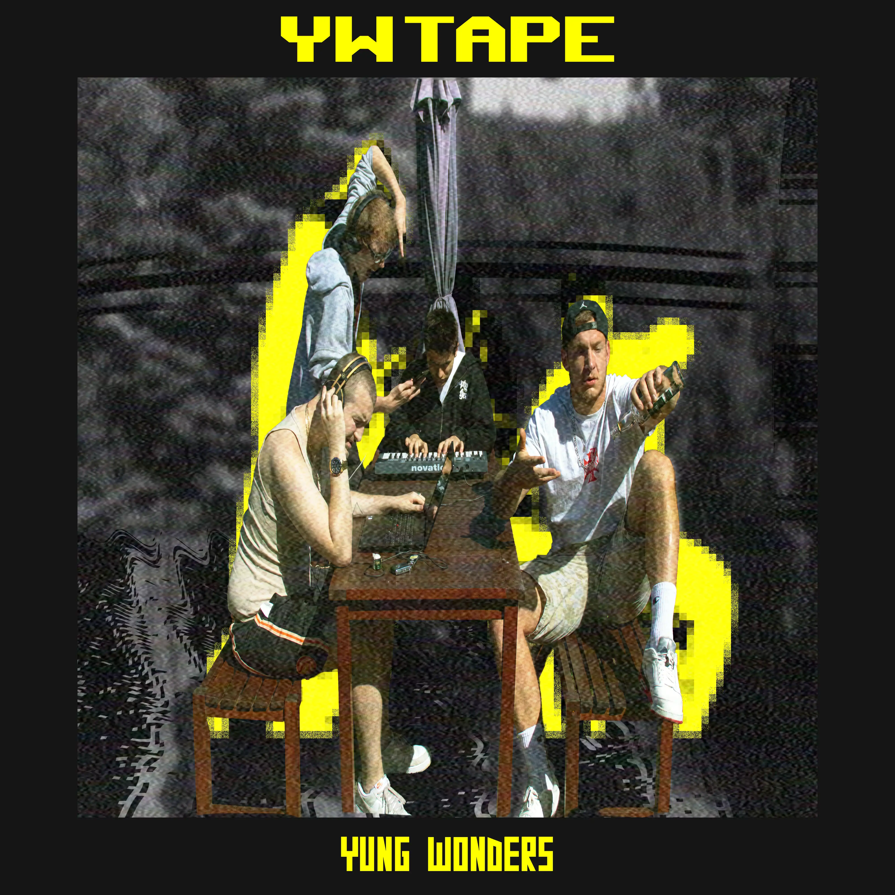

YW TAPE — YUNG WONDERS
1INTROyung
2MĚSTO UHLÍ A OCELIyung, Gazz, Daniel Vladimír, Pepa Hromada
3HALUZyung, Daniel Vladimír, Pepa Hromada
4MÁRNICEyung, Gazz
5BLANTIČKOVÁ STŘEDISKOVÁyung, Gazz, Pepa Hromada, Daniel Vladimír
6LE GOyung, Pepa Hromada, Daniel Vladimír
7BEZ HACKUyung, Pepa Hromada, Daniel Vladimír, Gazz
8CHCEŠ MŮJ SVĚTyung
9VAMPÍRyung, Daniel Vladimír
10LYRICEUMyung, Gazz, Pepa Hromada
11TRAPTASTIC 4yung, Pepa Hromada, Gazz
12BIGFOOTyung, Pepa Hromada
13SIN CITYyung, Gazz, Daniel Vladimír
14DIRTY WONDERSyung, Pepa Hromada, Gazz, Daniel Vladimír
